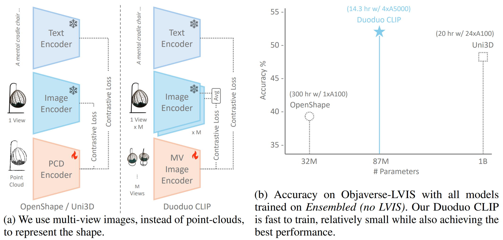
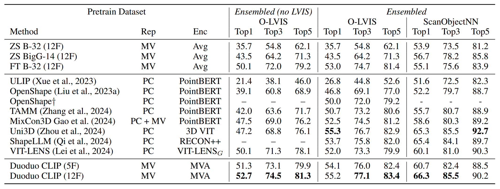

Duoduo CLIP: Efficient 3D Understanding with Multi-View Images
Han-Hung Lee*1, Yiming Zhang*1 and Angel Xuan Chang1,2
* Equal Contribution 1 Simon Fraser University 2 Canada-CIFAR AI Chair, Amii



Abstract
We introduce Duoduo CLIP, a model for 3D representation learning that learns shape encodings from multi-view images instead of point-clouds. The choice of multi-view images allows us to leverage 2D priors from off-the-shelf CLIP models to facilitate fine-tuning with 3D data. Our approach not only shows better generalization compared to existing point cloud methods, but also reduces GPU requirements and training time. In addition, we modify the model with cross-view attention to leverage information across multiple frames of the object which further boosts performance. Compared to the current SOTA point cloud method that requires 480 A100 hours to train 1 billion model parameters we only require 57 A5000 hours and 87 million parameters. Multi-view images also provide more flexibility in use cases compared to point clouds. This includes being able to encode objects with a variable number of images, with better performance when more views are used. This is in contrast to point cloud based methods, where an entire scan or model of an object is required. We showcase this flexibility with object retrieval from images of real-world objects. Our model also achieves better performance in more fine-grained text to shape retrieval, demonstrating better text-and-shape alignment than point cloud based models.
Model
Synthetic Retrieval
Real World Retrieval
Comparison to Previous SOTA

Citing
@misc{lee2024duoduo,
title={Duoduo CLIP: Efficient 3D Understanding with Multi-View Images},
author={Han-Hung Lee and Yiming Zhang and Angel X. Chang},
year={2024},
eprint={2406.11579},
archivePrefix={arXiv},
primaryClass={cs.CV}
}
Acknowledgements
This work was funded by a CIFAR AI Chair, a NSERC Discovery grant, and a CFI/BCKDF JELF grant.